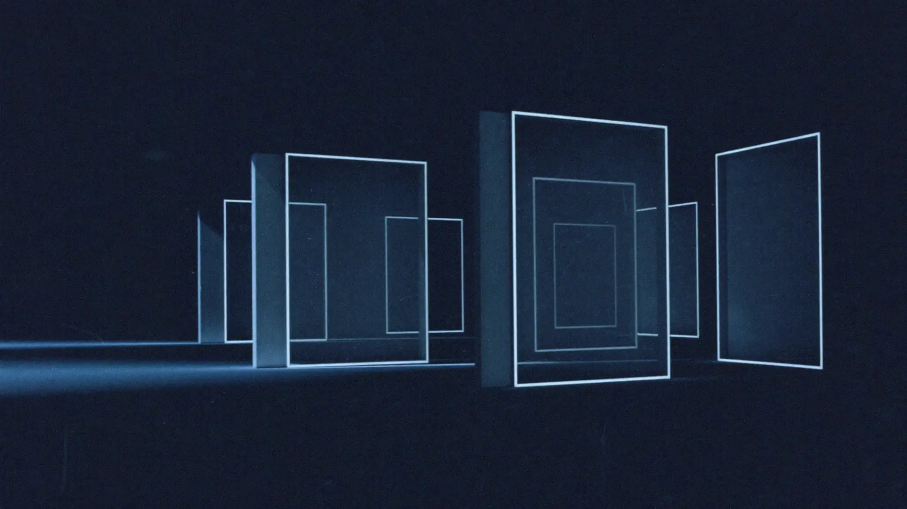
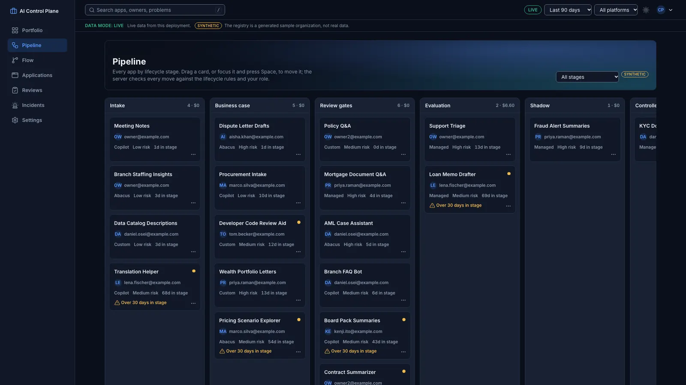
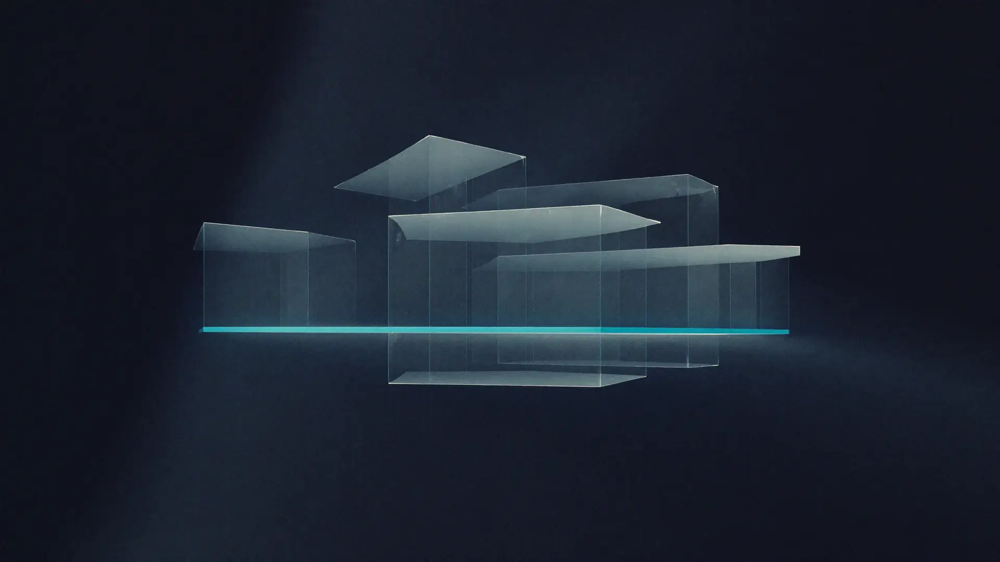

AI product governance · portfolio project
The control plane that decided not to ship the LLM.
It tracks every AI app a bank is building, gates each one through a governed lifecycle, and for one live use case it measured two Gemini models against a plain classifier on 1,540 banking messages. Neither model passed the release gates, so the software withheld them, and it enforces that decision.
No sign-up. The app runs its real backend inside your browser, and nothing you do leaves your tab.
The problem
Banks have dozens of AI apps in flight and no shared way to decide which ones should ship.
Copilot add-ons, vendor tools, and in-house models each arrive with a demo and a promise. What is missing is one place that knows who owns each app, what it is supposed to save, which approvals it has, and whether the model inside is good enough to trust with customers. This project builds that place and runs one use case through it end to end.
A governed registry
40 apps across Copilot, Abacus, custom builds, and managed apps move through nine stages. Every move is checked on the server against the lifecycle rules and the person's role. Nobody can approve their own submission. SYNTHETIC
Evidence before release
Support Triage routes banking messages to auto-handling, human review, or abstain. Three configs were scored on the same frozen cases, a deterministic policy decides each route, and release gates decide whether a model may go live.
Control after release
A budget ledger reserves money before every model call, daily signals watch for drift, and an incident pauses automation and rolls back to human review. All of it is visible in one console.
The decision
Withhold the LLM. Keep the classifier in production.
- gemini-3.8-flash passes 5 of 10 release gates as a full candidate and 4 of 6 as the proposed cohort. MEASURED
- Its macro F1 is 0.885 against a floor of 0.893, and 4 sensitive intents miss the 0.95 recall gate, the lowest at 0.60. MEASURED
- Where the LLM and the classifier agree, auto-routed precision rises to 0.976, and the LLM routes 90% of out-of-domain risk cases to abstain against 0% for the classifier. MEASURED
- In a 14-day shadow replay the models agreed on 85.5% of labels SIMULATED for $1.65 of model spend MEASURED; the cohort would have added about $151 of net value ASSUMPTION.
- That gain does not justify releasing below the sensitive-recall bar. The next investment is targeted: fix the card-payment versus direct-debit confusions and re-evaluate, rather than buying a bigger model.
Source: docs/release_recommendation.md
Recorded release decisions
Every gate stores its threshold, the observed value, and pass or fail. A full activation is blocked in software while any gate fails. MEASURED
Try it
Play with the real app. It takes seconds, not minutes.
The live app opens straight away with the full portfolio. In the background it starts the unchanged Python backend inside your browser, so every click is checked by the same rules as the server. Switch roles with the "Viewing as" menu. "Reset demo" puts everything back.
- 1Move an app through the lifecycleOn Pipeline, drag Mortgage Document Q&A from Review gates to Evaluation. Then try Meeting Notes to Business case: it is blocked until a business case exists.
- 2Try to approve your own submissionAs Governance admin, submit an app and open Reviews. A different person must approve.
- 3Edit the release cohortSupport Triage, Decision Policy tab: change the cohort and preview the gates, recomputed from the measured results.
- 4Record a release decisionOn the Release tab, try "Activate full". It stays blocked while gates fail; record "Withhold" instead.
- 5Switch to Executive viewerEvery write control disappears, and the backend refuses writes anyway.

Preparing the app in the background…
Watch
The product in four minutes, the architecture in one.
The product
One console for the portfolio, the evidence, and the decision.
Screens from the deployed Google Cloud console in live mode. Every number on screen carries its provenance: MEASURED, SIMULATED, FIXTURE, or ASSUMPTION.

Architecture
Google Cloud, least privilege, and a budget on every call.
Cloud Run behind Identity-Aware Proxy, Firestore for the registry and the ledger, BigQuery for analytics, Cloud Run jobs on a schedule, and Vertex AI for the models. It was deployed, smoke-tested, recorded, and torn down the same day. Eleven diagrams, each drawn with Google's official icons; select one to enlarge it.
Evidence
Three configs, the same 1,540 frozen cases.
Thresholds were tuned on a development split and frozen before any frozen run; each config saw the frozen set once, in the same order. Banking77 (CC BY 4.0), 77 intents.
| Metric | classifier_v1 | gemini-3.8-flash | gemini-3.1-flash-lite |
|---|---|---|---|
| Macro F1 (abstain counts as a miss) | 0.913 | 0.885 | 0.839 |
| Automation coverage | 86.2% | 79.4% | 76.5% |
| Precision on auto-routed cases | 0.944 | 0.976 | 0.974 |
| Review rate | 13.8% | 20.5% | 22.8% |
| Latency p95 | 2 ms | 3,531 ms | 1,382 ms |
| Model cost per 1,000 cases | $0.0000 | $1.0655 | $1.0139 |
| Out-of-domain risk cases routed correctly | 0.00 | 0.90 | 0.90 |
| Lowest recall on a sensitive intent | 0.75 | 0.60 | 0.50 |
All values MEASURED on Vertex AI at list prices. Risk-suite cases are AUTHORED by one rater. Source: docs/experiment_report.md
Business case
The LLM is worth more per month, and still not safe to ship.
Net monthly value = labor saved on correct auto routes − misroute costs − review labor − model cost − infrastructure, for 50,000 cases a month. Every input is an assumption a finance partner would replace; the precision figures are measured.
| Config | Auto precision | Breakeven precision | Net monthly value |
|---|---|---|---|
| classifier_v1 | 0.944 MEASURED | 0.849 ASSUMPTION | $57,270 ASSUMPTION |
| gemini-3.8-flash | 0.976 MEASURED | 0.865 ASSUMPTION | $66,957 ASSUMPTION |
| gemini-3.1-flash-lite | 0.974 MEASURED | 0.864 ASSUMPTION | $62,130 ASSUMPTION |
Sensitivity for gemini-3.8-flash: net monthly value (breakeven precision)
| Misroute cost \ review minutes | 0.5 min | 1 min | 2 min |
|---|---|---|---|
| $4 | $74,429 (0.810) | $70,594 (0.819) | $62,923 (0.836) |
| $8 | $70,793 (0.859) | $66,957 (0.865) | $59,287 (0.878) |
| $16 | $63,520 (0.906) | $59,685 (0.911) | $52,014 (0.919) |
| $32 | $48,974 (0.944) | $45,139 (0.947) | $37,469 (0.952) |
All values ASSUMPTION; the highlighted cell is the base case. Value is not the release criterion: the sensitive-recall gate is. Source: docs/business_case.md
Incident response
Drift was caught the day it began, and automation stood down.
A drill on the production classifier: alert thresholds were frozen from a baseline window before 40 authored drift cases were injected on simulated days 10 to 12.
- Days 1–7BaselineThresholds set from the mean and spread of each daily signal, then frozen.
- Day 10Drift beginsParaphrased sensitive and out-of-domain messages join the traffic. FIXTURE
- Day 10Incident openedReview rate 0.2177 against a threshold of 0.2172: detected 0 days after the drift began. MEASURED
- Day 10Pause and roll backThe governance admin pauses automation; every case goes to human review.
- Day 13ResumeA shadow check passes every threshold, and automation resumes.
The honest caveat: the margin was 0.0006 and no other signal breached, so the report recommends a drift-specific signal before relying on these alerts. Source: docs/incident_report.md
Engineering decisions
Choices, the alternatives, and why.
| Decision | Alternatives considered | Why |
|---|---|---|
| A deterministic six-rule policy decides every route | Trust the LLM's self-reported confidence | Self-reported confidence is neither calibrated nor auditable. Thresholds are tuned on development data and frozen before evaluation. (D6, D15) |
| The frozen set is used once per config | Iterate against the test set | Re-running against the test set quietly tunes to it; a re-run needs a logged reason. (D10) |
| A ledger reserves budget before every model call | Billing alerts after the fact | Reserve, send, settle exactly once; lost responses are held, never retried. Total model spend was capped at $10. (D11, D13, D20) |
| Withhold the better-scoring LLM | Ship a narrowed cohort anyway | The cohort still failed macro F1 and one sensitive recall; the measured result wins over the demo story. (D30) |
| IAP directly on Cloud Run; the backend re-verifies every assertion | A load balancer in front of IAP | No load balancer cost, and a forged header is rejected at the edge and again in the app. (D33, D35) |
| Analytics export loads staging tables, then MERGEs | Streaming inserts | Re-running the nightly export cannot double-count: the same row count after two runs. (D34, D37) |
| The public app runs the unchanged backend in the browser | A read-only snapshot; a hosted backend and database | Visitors can act, nobody can deface it, it costs nothing, and a parity test holds it to the server. (D36, D38) |
| Diagrams generated as draw.io from code, with draw.io's own Google Cloud icons | Auto-layout diagram libraries | Exact placement and editable files; a test checks the icon styles against draw.io's source. (D39) |
Thirty-nine recorded decisions in docs/decisions.md.
Limitations
What this does not prove.
- Single-rater labels. The 60 risk-suite cases and the 40 drift cases were written and labeled by one person. AUTHORED
- Simulated traffic. Shadow mode replays the Banking77 test split over 14 simulated days, not live customers. SIMULATED
- Benchmark versus production. Banking77 messages are short, single-intent, and English. Real queues are messier.
- Assumed economics. Volumes, minutes, labor rates, and misroute costs are placeholders a finance partner would supply. ASSUMPTION
- A sample organization. The 40-app registry is generated, not a real bank's portfolio. SYNTHETIC
- No live model calls in the public app. Its numbers come from the committed real runs; the Google Cloud deployment was torn down after verification.